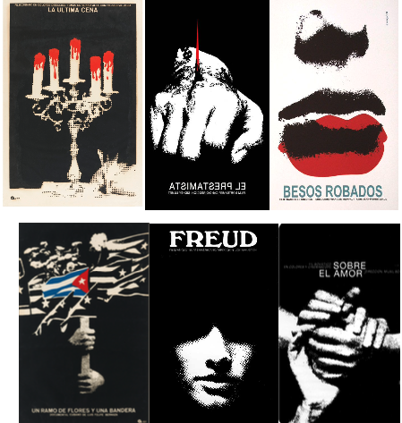
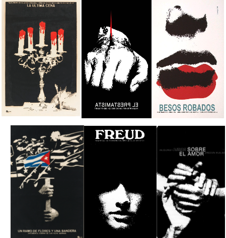

Azcuy jump started a very characteristic style that was recognized in Cuban cinema
Azcuy was also known for his use of color restriction and juxtaposition to convey clearer messages through his design which ensured that his audience did not get lost in the message that he was trying to convey through his work.

Tinashe wrote, produced, and engineered her mixtapes, and released them to the world via YouTube. It was after her fourth self-produced mixtape that got her signed to a major record deal. What I appreciate about her is that she is that she will always step out of the “box” and try new artistic approaches with her image, sound, and visuals, making her image nothing but her own.


Lange's work is so meaningful because she could capture photos of her subjects at their most challenging moment, face the cards that life has given them, and capture their beauty. Her photography showcased the horrific consequences of the Great Depression, which became a symbol and promoted a national plan to restore prosperity and prevent further depression.
We can see through her lensed the harsh reality the world has endured because of Dorothea Lange. Dorothy’s work is relevant to me as well as everyone else because it’s because of her that we can see the tragedies and injustice that many people faced before us